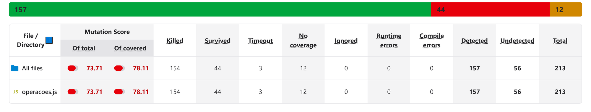
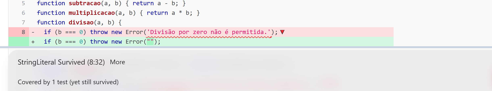
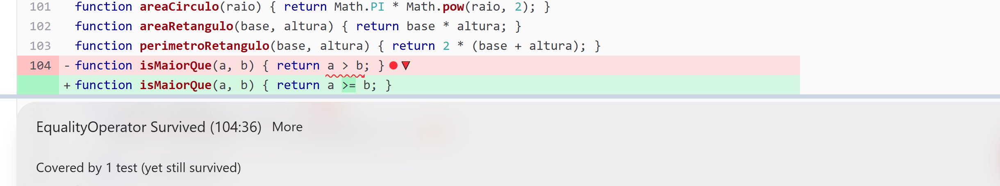
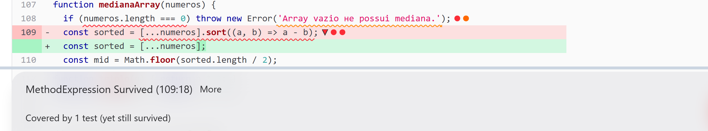
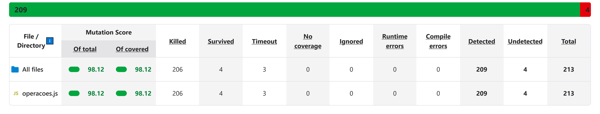
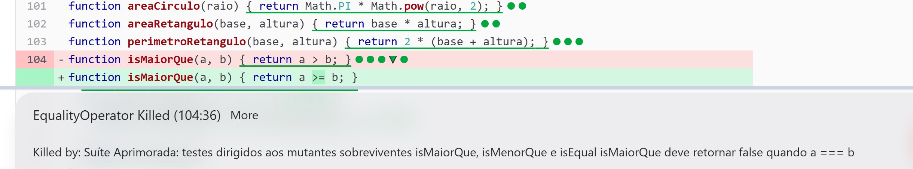
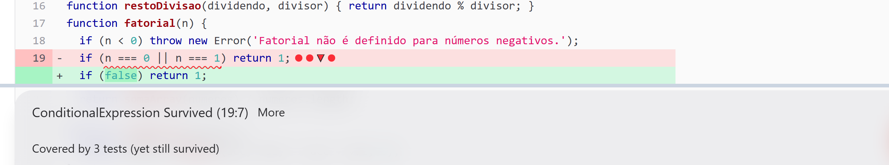

| Mutation score | 73,71% → 98,12% |
| Cobertura de código (linhas) | 98,64% → 100% |
| Testes de unidade | 50 → 82 |
| Mutantes indetectados | 56 → 4 |
O projeto base é uma biblioteca de 50 funções matemáticas com 50 testes de unidade em Jest, que passam integralmente. Medidos com Jest 29.7.0 e StrykerJS 10.0.0 sobre Node.js 22.17.0, os números iniciais são:
| Suíte original (50 testes) | Statements | Branches | Functions | Lines | Mutation score |
|---|---|---|---|---|---|
| Resultado medido | 85,41% | 58,82% | 100% | 98,64% | 73,71% |
A discrepância é o ponto central do trabalho: 100% das funções e 98,64% das linhas são executadas, mas apenas 73,71% dos defeitos injetados são detectados — quase 25 pontos percentuais de diferença. A razão é que cobertura mede execução e o teste de mutação mede verificação: um teste pode percorrer uma linha sem asseverar nada sobre o seu efeito. Dos 213 mutantes gerados, 154 foram mortos, 3 resultaram em timeout (laços infinitos, contados como detectados), 44 sobreviveram e 12 não tinham cobertura alguma — estes concentrados nos guard-clauses de exceção, coerentes com os 58,82% de cobertura de ramos, a única métrica que já sinalizava fragilidade.

Os três mutantes a seguir representam classes distintas de fraqueza. Em todos, o relatório registra Covered by 1 test (yet still survived): a linha era executada e, ainda assim, o defeito passou.

divisao e o teste original não percebe.O mutante troca 'Divisão por zero não é permitida.' por "". O teste
original verificava apenas expect(() => divisao(5, 0)).toThrow(), sem
argumento: o oráculo confirma que alguma exceção ocorreu, não qual. Toda
corrupção da mensagem é invisível para ele. O mesmo padrão deixava escapar os literais de
raizQuadrada, fatorial, maximoArray, minimoArray,
inverso e medianaArray — seis deles sem cobertura, pois nenhum teste chegava
a provocar a exceção.

a > b trocado por a >= b em
isMaiorQue: sobrevive porque o caso a === b nunca é testado.Os operadores > e >= divergem em um único ponto do domínio:
a === b. O teste original exercitava somente isMaiorQue(10, 5), verdadeiro
nas duas versões, e por isso nunca contraria o mutante. A ausência de valores de fronteira se repetia
em isMenorQue, clamp (linhas 88–89), raizQuadrada e
fatorial (n < 0 → n <= 0) e isPrimo
(n <= 1 → n < 1).

.sort((a, b) => a - b) em
medianaArray não é detectada: o teste usava um array já ordenado.Este é o caso mais instrutivo: o Stryker remove a ordenação e o teste original
— expect(medianaArray([1, 2, 3, 4, 5])).toBe(3) — continua passando, porque o array
fornecido já estava ordenado. O teste cobria 100% da função sem exercitar a sua principal
responsabilidade. Pela mesma razão sobreviveram, na linha 109, os mutantes que trocam o comparador por
() => undefined e a - b por a + b; e, como o array tinha
tamanho ímpar, o ramo da média dos dois centrais (linha 112) nunca era executado — dali vinham 4 dos 12
mutantes sem cobertura. Sintoma análogo ocorria nas conversões de temperatura, testadas apenas com
0 °C e 32 °F, valores que anulam o fator multiplicativo e tornam celsius * 9/5
indistinguível de celsius * 9 * 5.
Foram escritos 32 novos testes (de 50 para 82) no bloco “Suíte Aprimorada” de test/operacoes.test.js, cada um indicando em comentário a linha e o mutador que elimina. Nenhuma linha de src/operacoes.js foi alterada: todo o ganho vem da suíte de testes.
| Técnica | Exemplos adicionados | Mutantes eliminados |
|---|---|---|
| Oráculos específicos — asseverar a mensagem exata, não só o lançamento. | expect(() => divisao(5,0)) .toThrow('Divisão por zero não é permitida.') |
7 StringLiteral + 6 ConditionalExpression de guard-clauses |
| Valores de fronteira — o ponto exato em que os operadores divergem. | isMaiorQue(5,5) → false raizQuadrada(0) → 0 fatorial(0) → 1 |
8 EqualityOperator |
Casos negativos — a classe de equivalência oposta, para o predicado não poder ser fixado em true. |
isPar(7) → false isPrimo(9) → false isDivisivel(10,3) → false |
12 ConditionalExpression, BooleanLiteral e BlockStatement |
| Dados representativos — entradas que realmente exijam o comportamento. | medianaArray([5,1,3]) → 3 medianaArray([4,1,3,2]) → 2.5 celsiusParaFahrenheit(100) → 212 |
13 mutantes de medianaArray e das conversões de temperatura |
Dois mutantes exigiram oráculos menos óbvios, por não alterarem o valor devolvido:
produtoArray, linha 84. Com if (false) o resultado
continua 1, pois o reduce já usa 1 como acumulador inicial; o único comportamento
observável é o curto-circuito. O teste instrumenta o método reduce do array e assevera
que ele não é chamado quando o array está vazio.clamp, linhas 88–89. valor < min e
valor <= min devolvem números numericamente iguais quando valor === min;
a única diferença observável em JavaScript é a identidade de -0 e +0, que é
a semântica de Object.is usada por toBe. Assim,
expect(clamp(-0, 0, 10)).toBe(-0) fixa o contrato “valor já dentro do intervalo é
devolvido sem substituição” e mata o mutante.| Execução | Testes | Mutantes | Mortos | Timeout | Sobrev. | Sem cobertura | Mutation score | Cobertura (linhas) |
|---|---|---|---|---|---|---|---|---|
| Antes (suíte original) | 50 | 213 | 154 | 3 | 44 | 12 | 73,71% | 98,64% |
| Depois (suíte aprimorada) | 82 | 213 | 206 | 3 | 4 | 0 | 98,12% | 100% |
O mutation score subiu de 73,71% para 98,12% (+24,41 pontos percentuais):
dos 56 mutantes antes indetectados — 44 sobreviventes e 12 sem cobertura — restaram apenas 4. A meta de
98% foi atingida e passou a ser verificada automaticamente por
"thresholds": { "break": 98 } em stryker.conf.json, que faz a
análise falhar se o score cair. A cobertura chegou a 100% em todas as dimensões, o que reforça a tese do
trabalho: ela é consequência, e não causa, de uma boa suíte.



fatorial: cobertos por três testes e ainda assim vivos.Todos atacam o mesmo trecho, if (n === 0 || n === 1) return 1;, que é
redundante: para n <= 1 o laço for (let i = 2; i <= n; i++)
não executa nenhuma iteração e resultado já vale 1, logo a função devolve 1 com ou sem a
linha 19. Original e mutantes são funcionalmente idênticos em todo o domínio, sem efeito colateral que os
distinga: são mutantes equivalentes, impossíveis de matar por qualquer teste. Como decidir
equivalência de programas é indecidível no caso geral, nenhuma ferramenta os descarta sozinha — o
julgamento é do engenheiro. Portanto 209/213 = 98,12% é o teto desta suíte sem tocar no código de produção.
As alternativas ortodoxas seriam refatorar o guard-clause redundante ou anotá-lo com
// Stryker disable next-line ConditionalExpression,LogicalOperator, o que o reclassificaria
como Ignored e levaria o score a 100%. Preferimos manter os quatro visíveis: mascarar
a métrica custaria mais do que os 1,88 pontos que ela deixa de exibir.
O experimento mostra, com números do mesmo projeto, que cobertura de código é condição necessária mas insuficiente: a suíte original executava 100% das funções e 98,64% das linhas e, ainda assim, deixava passar 56 dos 213 defeitos injetados. O teste de mutação avalia justamente o que a cobertura ignora — a qualidade do oráculo — e converte “melhorar os testes” em tarefa concreta e verificável: cada mutante sobrevivente é um defeito real que a suíte não veria, com a linha exata e a alteração que o produziu.
Três fraquezas recorrentes explicaram quase todos os sobreviventes: asserções que verificam a ocorrência mas não o conteúdo; ausência de valores de fronteira; e dados de teste que não exercitam a responsabilidade da função (o array já ordenado, o 0 °C). Nenhuma seria revelada por cobertura ou inspeção superficial. O custo foi modesto — 213 mutantes em cerca de 15 segundos —, o que justifica integrar a análise à CI com um limite mínimo de score. E os mutantes equivalentes da linha 19 lembram que a métrica é instrumento de diagnóstico, não alvo: a leitura crítica do relatório vale mais do que a perseguição do 100%.